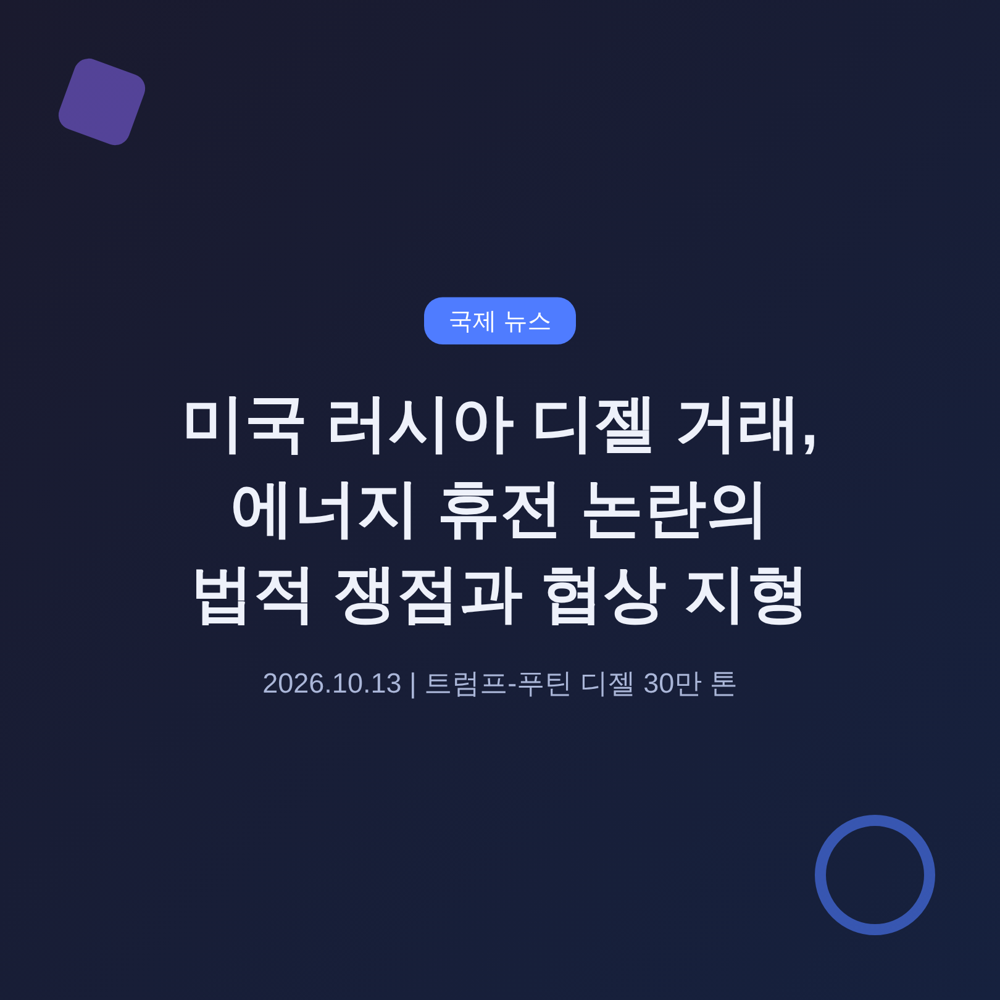
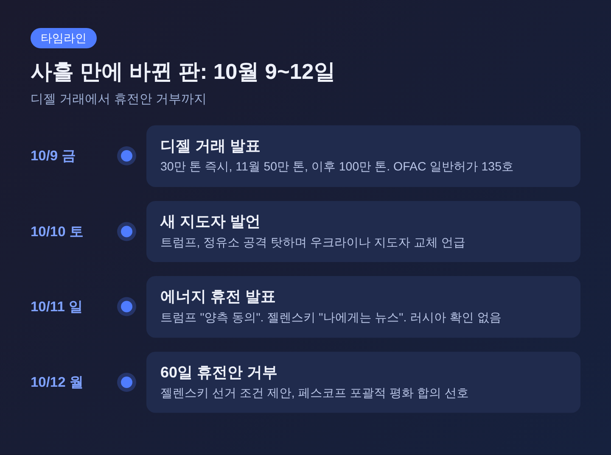
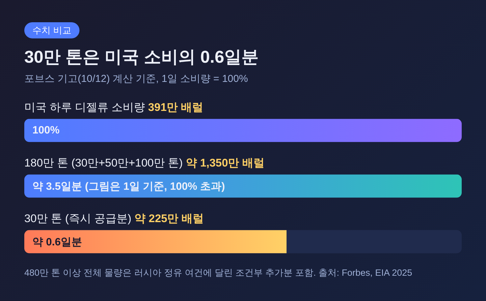
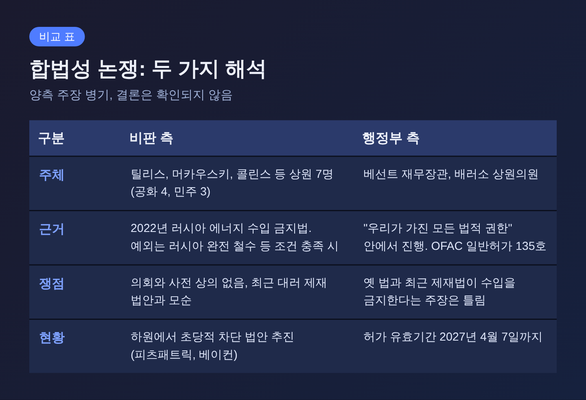
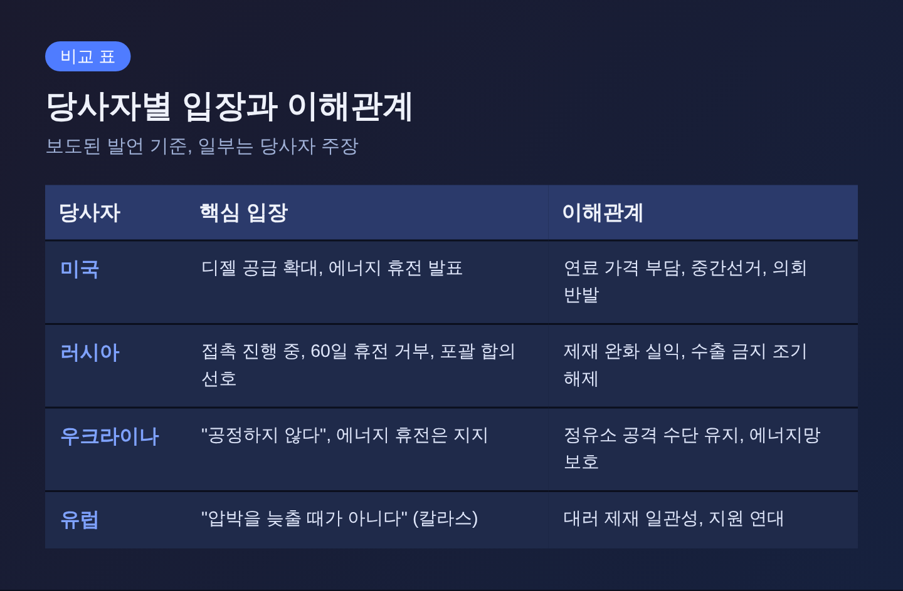
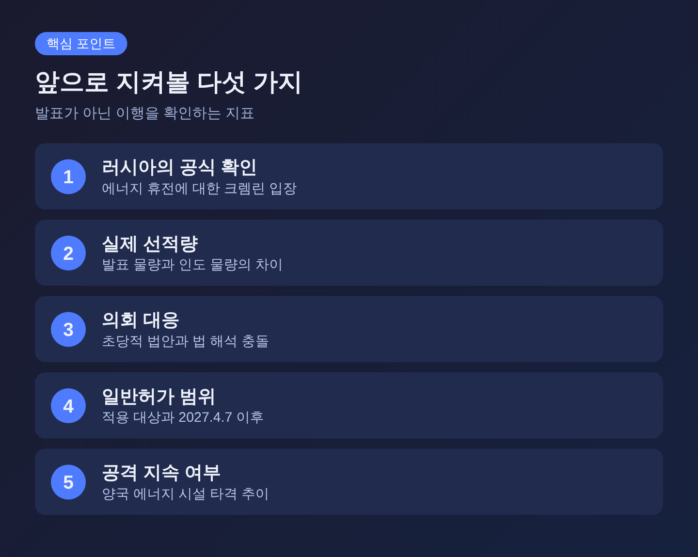

오늘은 트럼프 대통령이 발표한 러시아산 디젤 거래와 '에너지 휴전' 논란을 정리해 보려 합니다. 거래의 구조, 미국 내 법적 쟁점, 우크라이나 협상 지형을 차례로 살펴봅니다. 각국 입장은 보도에 나온 주장 그대로 병기하며, 확인되지 않은 내용은 '주장'으로 표시합니다.
3줄 요약
1. 트럼프 대통령은 10월 9일 푸틴 대통령과의 통화 뒤 러시아산 디젤 30만 톤 즉시 공급, 11월 50만 톤, 이후 100만 톤 공급에 합의했다고 발표했습니다. 미 재무부는 2027년 4월 7일까지 유효한 일반허가를 냈습니다.
2. 10월 11일 발표된 '에너지 휴전'은 러시아 쪽 공식 확인이 없고, 크렘린은 10월 12일 젤렌스키 대통령의 60일 휴전안도 거부했습니다.
3. 미 상원 초당적 의원들은 2022년 러시아 에너지 수입 금지법 위반 가능성을 지적했고, 재무장관은 합법이라고 맞서고 있습니다.
10월 9일(금), 트럼프 대통령은 푸틴 대통령과 통화한 뒤 러시아가 디젤을 미국과 세계 시장에 공급하기로 했다고 밝혔습니다. 첫 물량은 30만 톤으로 즉시 풀리고, 11월에 50만 톤, 그 뒤에 100만 톤이 이어진다는 내용입니다. 통화는 약 1시간 반 이어졌고 주로 우크라이나 문제를 다뤘다고 합니다. 크렘린의 유리 우샤코프 보좌관은 통화를 "매우 실질적이고 우호적"이라고 평가했습니다.
같은 날 미 재무부 해외자산통제국(OFAC)은 일반허가 135호를 냈습니다. 제재로 막혀 있던 러시아산 디젤의 판매, 인도, 하역, 수입을 2027년 4월 7일까지 허용하는 조치입니다. 다만 러시아 중앙은행, 국부펀드, 재무부가 미국 금융기관에 둔 계좌에서의 인출은 허용하지 않는 것으로 보도됐습니다.
10월 10일(토)에는 트럼프 대통령이 우크라이나의 정유시설 공격이 미국 디젤 가격을 올린다고 비판하며 "거래를 할 수 있는 새 지도자를 가지라고 제안한다"고 말했습니다. 이튿날인 10월 11일(일)에는 SNS에 "즉시 발효되는 에너지 휴전"이 있으며 "양측이 동의했다"고 적었습니다. 세부 내용은 없었습니다.

이 거래가 눈길을 끄는 이유는 세 가지 사안이 한 묶음으로 움직이기 때문입니다. 첫째는 미국 내 연료 가격입니다. 10월 11일 기준 미국 디젤 평균가는 갤런당 6.28달러로, 1년 전 3.67달러보다 크게 올랐습니다. 11월 중간선거를 앞둔 정치적 부담이 커진 상황입니다.
둘째는 대러 제재의 일관성입니다. 트럼프 대통령은 약 3주 전 대규모 대러 제재 법안에 서명했는데, 이번에는 반대로 러시아산 디젤에 길을 열었습니다. 비판자들이 문제 삼는 지점이 바로 여기입니다.
셋째는 우크라이나 전쟁의 협상 구도입니다. 한 미 당국자는 젤렌스키 대통령이 러시아 정유시설 공격을 멈추라는 요청을 약 여섯 번 무시했다고 Axios에 전했습니다. 미국 쪽 설명으로는 이것이 거래의 배경입니다. 이는 미 당국자의 주장이며, 우크라이나는 다른 입장을 내고 있습니다.
숫자를 놓고 보면 기대와 현실의 거리가 드러납니다. 포브스 기고(아리엘 코언)의 계산에 따르면 30만 톤은 약 225만 배럴이고, 미국의 하루 디젤류 소비량(2025년 EIA 기준 391만 배럴)의 약 0.6일분입니다. 11월 50만 톤과 이후 100만 톤을 합친 180만 톤도 약 3.5일분에 그칩니다.
트럼프 대통령은 이후 약 300만 톤이 더 나올 수 있다고 했습니다. 이 경우 전체는 480만 톤 이상입니다. 다만 추가분은 러시아 정유소 사정에 달려 있다는 조건이 붙었습니다. 러시아 부총리 알렉산드르 노박은 10월 30만 톤, 11월 50만 톤, 12월 100만 톤을 말했고, 이후 월 최대 300만 톤도 가능하다고 했습니다. 러시아는 디젤 수출 금지를 조기에 풀겠다고도 밝혔습니다.

여기에 공급 자체의 제약이 있습니다. 포브스는 우크라이나 공격으로 러시아 정유 처리량이 6월 하루 380만 배럴로 20년 만에 최저였고, 해상 디젤 수출도 2025년 평균의 약 80% 아래라고 전했습니다. 러시아가 약속한 물량을 실제로 맞출 수 있는지는 확인되지 않았습니다.
가격의 근본 원인을 두고는 해석이 갈립니다. 트럼프 대통령은 우크라이나의 정유소 공격을 탓합니다. 반면 TIME은 2월 시작된 미국-이란 전쟁과 호르무즈 해협 봉쇄를 주된 요인으로 설명합니다. 포브스는 8월 기준 걸프와 러시아의 수출 감소분 가운데 약 3분의 2가 걸프, 약 3분의 1이 우크라이나 공격 탓이라고 추산했습니다. 이 분석가는 거래가 중간선거 전에 가격을 크게 낮추기는 어렵다고 봤습니다.
가장 뜨거운 대목은 법입니다. 틸리스 상원의원(공화, 노스캐롤라이나)은 이 거래가 2022년 러시아 에너지 수입 금지법을 위반할 수 있다고 지적했습니다. 법은 러시아의 우크라이나 완전 철수 같은 특정 조건에서만 예외를 두는데, 지금은 그 조건이 충족되지 않았다는 논리입니다.
10월 11일에는 공화당 머카우스키, 콜린스, 틸리스, 커티스 의원과 민주당 섀힌, 와이든, 블루먼솔 의원이 공동성명을 냈습니다. 거래가 2022년 법에 "정면으로 반한다"며 의회와 상의하지 않았다고 비판했습니다. 콜린스 의원은 "러시아산 디젤 구매에 대한 제재를 푸는 대통령의 결정에 반대한다"고 밝혔습니다. 하원에서는 피츠패트릭 의원이 러시아산 원유 구매를 막는 초당적 법안을 준비 중이고, 베이컨 의원이 공동발의에 합의했습니다.
행정부 입장은 다릅니다. 스콧 베선트 재무장관은 Fox News에서 "우리가 가진 모든 법적 권한"으로 진행하며, 옛 법이나 최근 제재법이 금지한다는 주장은 틀렸다고 말했습니다. 존 배러소 상원의원(공화)은 대통령이 "어려운 결정을 해야 한다"며 옹호했습니다.

현재로서는 어느 해석이 맞는지 가려진 바 없습니다. 법원이나 의회가 판단했다는 보도도 확인되지 않았습니다. 일반허가가 어느 제재 대상 기업까지 포괄하는지도 확인된 자료가 없습니다. 이 부분은 앞으로 의회 대응과 재무부의 추가 설명을 지켜봐야 합니다.
에너지 휴전을 보는 시각은 당사자마다 다릅니다. 트럼프 대통령은 양측이 동의했다고 했습니다. 젤렌스키 대통령은 이를 두고 "나에게는 뉴스였다"고 말했고, 우크라이나는 휴전을 지지한다고 X에 적었습니다. 그는 러시아가 에너지 인프라 공격을 멈추면 정유시설 공격도 멈출 수 있다고 했습니다. 다만 우크라이나에는 크게 파손된 정유시설이 하나뿐이어서 정유시설만의 휴전은 의미가 작다고 덧붙였습니다.
러시아 쪽은 공식 확인을 하지 않았습니다. 드미트리 페스코프 크렘린 대변인은 10월 12일 "접촉이 진행 중이며, 말할 것이 생기면 알리겠다"고 답했습니다. 젤렌스키 대통령은 발표 직후에도 하르키우 발전소 등이 타격됐다고 주장했습니다. 이 주장은 독립적으로 교차확인된 것이 아니라 우크라이나 측 발언으로 전해진 내용입니다.
같은 날 젤렌스키 대통령은 ABC 인터뷰에서 러시아가 60일 휴전에 동의하면 선거를 치르겠다고 밝혔습니다. 페스코프 대변인은 이를 거부했습니다. 러시아는 일시 휴전이 아니라 포괄적 평화 합의를 원하고, 선거에 60일은 필요 없으며 우크라이나가 재정비할 시간만 준다는 취지였습니다. 다만 키이우가 "정말로" 선거를 치른다면 선거 당일 하루는 푸틴 대통령이 공격하지 말라고 명령할 수 있다고 덧붙였습니다.

유럽은 비판적입니다. 카야 칼라스 EU 외교안보대표는 "러시아 디젤 제재를 중단하면 모스크바에 전쟁 수행 수입을 더 준다"며 "압박을 늦출 때가 아니다"라고 말했습니다. TIME은 스웨덴 총리가 "유감"을, 에스토니아 총리가 "큰 오판"이라는 평가를 냈고, 캐나다 총리는 유럽의 평화 노력과 "정면으로 배치된다"고 밝혔다고 전했습니다. 유럽 외무장관들은 약 1,600개 개인·단체를 제재 명단에 추가하는 절차도 진행했습니다.
미국 내부의 기류도 한 방향이 아닙니다. 연료 가격을 낮춰야 하는 정치적 압박은 분명합니다. 반면 같은 당 의원들까지 법과 제재 일관성을 이유로 반대하고 있습니다. 러시아는 제재 완화의 실익을 챙기면서도 휴전은 포괄적 합의에 묶어 두려는 모습입니다. 우크라이나는 정유소 공격이라는 압박 수단을 잃을까 우려하면서도 에너지 휴전 자체는 받아들일 수 있다는 입장입니다.
예전에는 제재가 서방의 공통 압박 수단이었습니다. 지금은 그 수단을 미국이 어떻게 쓰느냐에 따라 협상판의 균형이 달라질 수 있는 국면입니다. 몇 가지 관전 포인트가 있습니다.

첫째, 러시아가 에너지 휴전을 공식 확인하는지입니다. 지금까지는 확인 발언이 없습니다. 둘째, 실제 선적 물량입니다. 발표와 인도는 다른 문제이고, 러시아 정유 능력이 변수입니다. 셋째, 의회의 대응입니다. 초당적 법안이 속도를 낼지, 의회와 행정부의 법 해석이 충돌할지 봐야 합니다. 넷째, 일반허가의 범위와 만기인 2027년 4월 7일 이후의 처리입니다. 다섯째, 양국의 에너지 시설 공격이 실제로 줄어드는지입니다.
한계도 분명히 해 두어야 합니다. 이 글은 10월 12일까지 보도된 내용에 근거합니다. 미 당국자, 우크라이나, 러시아 측 발언은 서로 엇갈리는 부분이 있고, 상당수는 당사자의 주장입니다. 상황이 빠르게 변하는 만큼 이후 보도로 달라질 수 있습니다.
정리하면 이렇습니다. 이번 거래는 연료 가격 대책으로 시작됐지만 제재, 법, 휴전 협상이 한꺼번에 얽힌 문제가 됐습니다.
"발표는 한 줄이었지만, 풀어야 할 쟁점은 세 겹입니다."
앞으로 확인해야 할 것은 약속의 크기가 아니라 실제 이행이라고 생각합니다. 서로 다른 주장 가운데 어느 쪽이 사실로 남는지는 몇 주 안에 선적 기록과 공습 상황이 말해 줄 것입니다.
참고 보도: Just Security(10/12), TIME(10/11, 10/12), Forbes(10/12), CBS News/AP(10/10), Kyiv Independent(10/12), Meduza·TASS(10/11~12), Arab News(10/10), Euromaidan Press(10/10), Axios·POLITICO·Reuters(Just Security 경유)